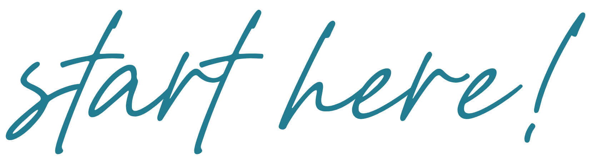
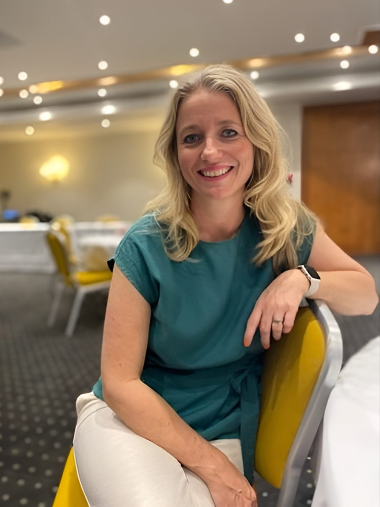
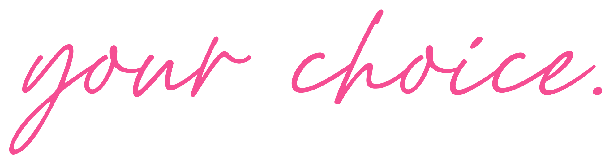
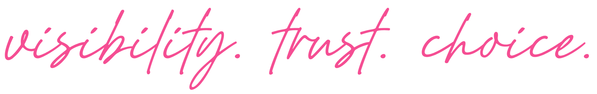
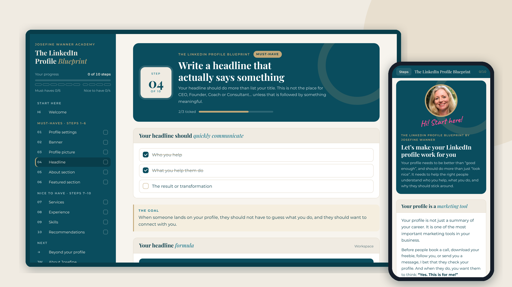
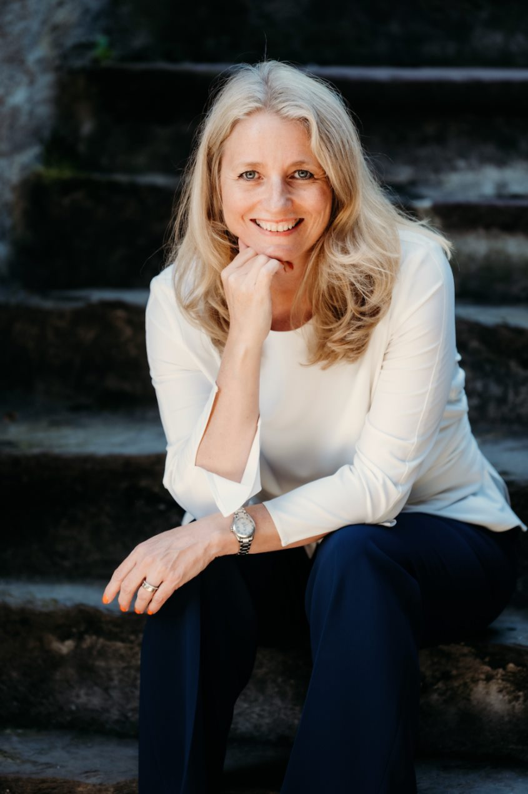
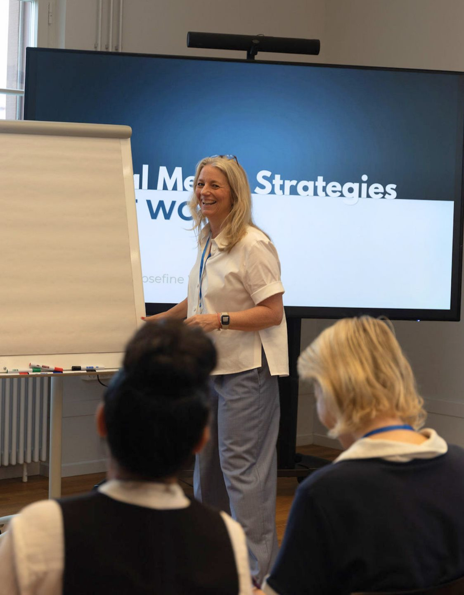

Visibility
Make it easy for the right people to find you and immediately understand who you help.
Josefine Wanner Academy
…because “finding clients” shouldn't be your full-time job. Build your reputation, attract the right clients and create a business that gives you more freedom, with LinkedIn as the foundation.

The Blueprint has helped 0+
coaches turn their profile into a client magnet
Trusted by coaches, consultants, leaders & teams at

0h
days, evenings and weekends, in her first year after corporate
01Why it matters
“When I left corporate, I thought I was building a freedom-based business. In reality, I was building another full-time job.”
I worked evenings. Weekends. Most times 14-hour days. What I actually wanted was freedom:
The freedom to decide who I work with.
The freedom to take a holiday without worrying where my next client would come from.
The freedom to say no to opportunities that weren't the right fit.
The freedom to build a business that supported my life, not one that consumed it.
02What I believe
Today, I believe your business should create opportunities. Not because you're constantly chasing them, but because you've built a reputation that makes the right people want to find you.
The opportunity to leave a job that drains you.
The opportunity to build something of your own.
The opportunity to choose who you work with.
The opportunity to create a business that supports your life, not the other way around.
03What it gives you

The choice to work with people you genuinely enjoy.
The confidence to say no to opportunities that aren't the right fit.
The freedom to build a business around your life, instead of building your life around your business.
04Why LinkedIn
I don't believe everyone has to be on LinkedIn. But every business needs somewhere people can discover you, get to know you and build trust in you.
For me, and for thousands of coaches and service providers I've taught, that place has been LinkedIn: one of the few platforms where genuine relationships, trust and opportunities still grow organically.
Sustainable growth comes down to three simple things:

Make it easy for the right people to find you and immediately understand who you help.
Content and conversations that build genuine trust, not just likes, so reaching out feels natural.
When opportunities come to you, you get to choose the clients, projects and life you want.
05The real problem
…then your business is working harder than it needs to.
you're relying on referrals.
you're networking constantly.
you're creating content, but it isn't turning into conversations.
people visit your profile… and quietly leave again.
Not because you're not good at what you do. When people don't immediately understand who you help, why you're different and why they should trust you, they move on. Not because they found someone better…
…but because they understood someone else first.
That's the good news
You simply need to make it easier for the right people to find you, understand what you do and trust you enough to take the next step.
That's where we start06Free resource
Your profile is often the first impression someone has of your business. Let's make sure it reflects the expertise you've worked so hard to build, section by section, with step-by-step instructions.
No guessing. No staring at a blank screen.
Join 5,000+ coaches & service providers. Free, no spam.


07Meet Josefine
For almost 20 years I built my career in Financial Services, leading projects, improving processes and helping large organisations solve complex problems. When I left corporate, I thought my experience alone would be enough. It wasn't. So I started experimenting.
One post. One conversation. One genuine connection at a time. LinkedIn became the place where I attracted:
The moment it became a system
My coaching colleague Anette kept asking me to show her exactly what I was doing. She signed 3 new clients in 8 weeks, with fewer than 700 followers.
0+
Coaches & service providers taught~0
Years in Financial Services0
Free videos on YouTubeMy mission
To help business owners become known for what they do, build genuine trust and create businesses that generate opportunities, so finding clients no longer has to be a full-time job.
When I help you reach more of the people who need you, you create more impact. Those people go on to help others, and that's how the snowball starts rolling.
08Beyond your profile
Your LinkedIn profile is just the beginning. Join me live to build a business that consistently creates opportunities. This is what I help my clients do:
✦ Be there live: I'm revealing something BIG
Doors open in
Stop wondering where your next client will come from.
09Client stories
From no profile picture to board seats, from referrals-only to a 200+ participant course.
“I didn't even have a profile picture, and the thought of posting felt overwhelming. I worried what my colleagues would think, and if I was even ready to put myself out there.”
“I've gone from feeling uncertain to showing up confidently, knowing exactly how to use LinkedIn as a powerful tool for growth.”
“I was already well-connected on LinkedIn, with over 5,000 connections, but most new clients came through referrals. I had no real system for consistently generating leads.”
“Now, that's completely changed. This Lead Generation. It's working!”
“For years, I struggled with visibility on Facebook and Instagram. It always felt heavy: pushy, salesy. I wasn't even sure LinkedIn was for me.”
“It doesn't feel heavy anymore. I actually enjoy the process.”
10Learn for free on YouTube

How to Get Clients on LinkedIn: Your 30-Day Plan to Land Your First Client
On the channel
After 20 years in Financial Services, including UBS and the Big 4, Josefine left corporate to build something she owns. Now she shows you how to do the same.
Recent uploads

“People connect with people. And buy from people.”
11For organisations
The same principles that help one person become visible can transform an entire organisation. When employees feel confident sharing their expertise, you gain visibility, stronger relationships and a stronger employer brand.
Keynotes, workshops and tailored training that help teams use LinkedIn with confidence. They don't need to become influencers; they represent themselves and your organisation professionally.
Every session is tailored to your audience, your objectives and their level of experience.
Planning an event? Let's talk12Already working with 1:1 clients?
At some point, visibility is no longer the challenge. Time is.
If your calendar is filling up and you're ready to grow without simply working more hours, the next step isn't more clients. It's a scalable offer.
Create, validate and launch a group program that lets you help more people while creating more freedom. Opens twice a year as a live cohort.
Create
Validate
Launch
I don't believe everyone should become an entrepreneur. But if you choose to build a business, I believe it should give you more than an income.
Opportunities.
Choice. Freedom.
One conversation. One connection. One opportunity at a time.